Karl Ho
School of Economic, Political and Policy Sciences
University of Texas at Dallas
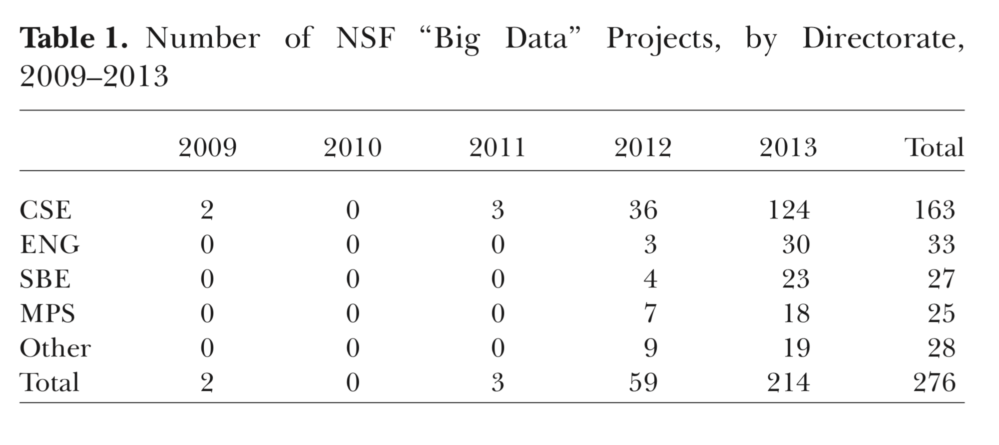
CSE - Computer and Information Science and Engineering
ENG - Engineering
SBE - Social Behavioral and Economic Sciences
Mathematics and Physical Science
Office of Behavioral and Social Sciences (OBSSR)
The National Archive of Computerized Data on Aging (NACDA)
program advances research on aging by helping researchers to profit from the under-exploited potential of a broad range of
datasets. NACD preserves and makes available the largest library of electronic data on aging in the United States
Data Sharing for Demographic Research (DSDR) provides data archiving, preservation, dissemination and other data infrastructure services. DSDR works toward a unified legal,
technical and substantive framework in which to share re
search data in the population sciences.
The USGS John Wesley Powell Center for Analysis and Synthesis
just announced eight new research projects for transforming big data sets and big ideas about earth science theories into
scientific discoveries. At the Center, scientists collaborate to perform state of the art synthesis to leverage comprehensive, long-term data.
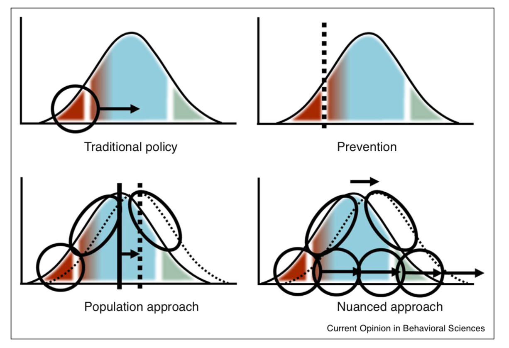
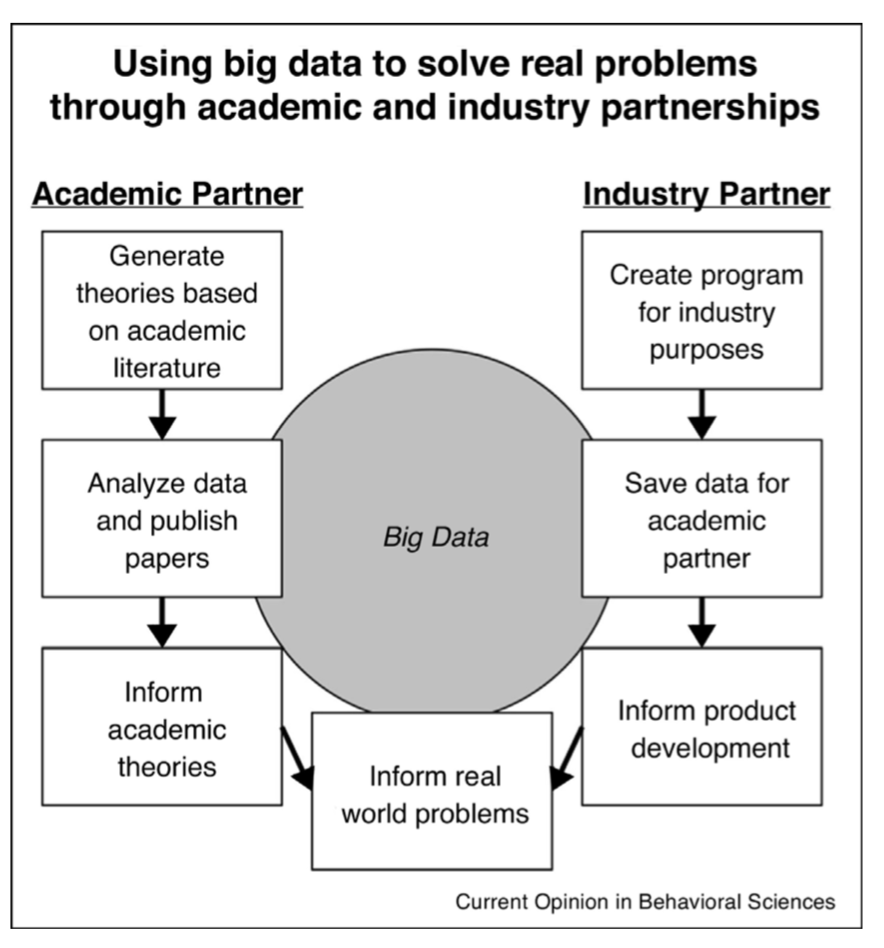
Mitroff, S.R. and Sharpe, B., 2017. Using big data to solve real problems through academic and industry partnerships. Current Opinion in Behavioral Sciences, 18, pp.91-96.
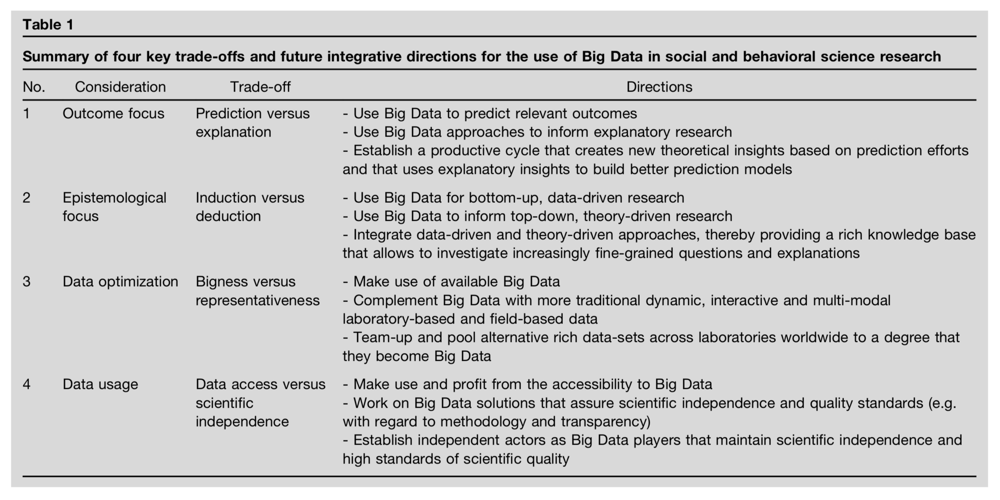
Mahmoodi, J., Leckelt, M., van Zalk, M.W., Geukes, K. and Back, M.D., 2017. Big Data approaches in social and behavioral science: four key trade-offs and a call for integration. Current Opinion in Behavioral Sciences, 18, pp.57-62.
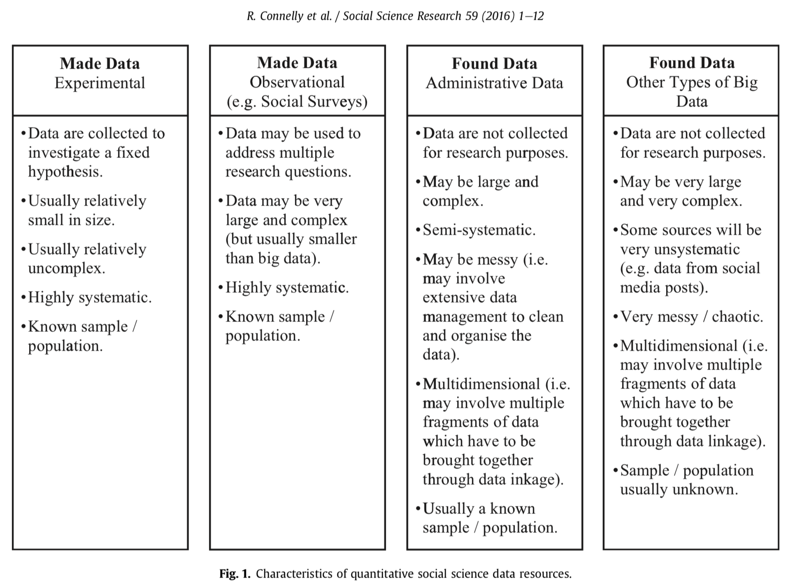
One assumes that the data are generated by a given stochastic data model. |
|---|
The other uses algorithmic models and treats the data mechanism as unknown. |
|---|
Data Model |
|---|
Algorithmic Model |
|---|
Small data |
|---|
Complex, big data |
|---|
Data are generated in many fashions. Picture this: independent variable x goes in one side of the box-- we call it nature for now-- and dependent variable y come out from the other side.
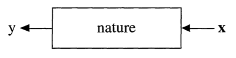
The analysis in this culture starts with assuming a stochastic data model for the inside of the black box. For example, a common data model is that data are generated by independent draws from response variables.
Response Variable= f(Predictor variables, random noise, parameters)
Reading the response variable is a function of a series of predictor/independent variables, plus random noise (normally distributed errors) and other parameters.
The values of the parameters are estimated from the data and the model then used for information and/or prediction.
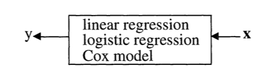
The analysis in this approach considers the inside of the box complex and unknown. Their approach is to find a function f(x)-an algorithm that operates on x to predict the responses y.
The goal is to find algorithm that accurately predicts y.
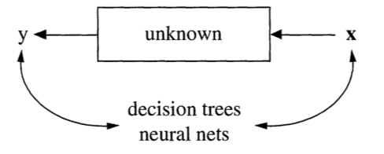
Unsupervised Learning
Supervised Learning vs.
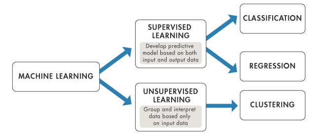
Source: https://www.mathworks.com
individuals
individuals
individuals
individuals
individuals
individuals
individuals
individuals
individuals
individuals
individuals
individuals
individuals
individuals
individuals
individuals
individuals
individuals
individuals
individuals
individuals
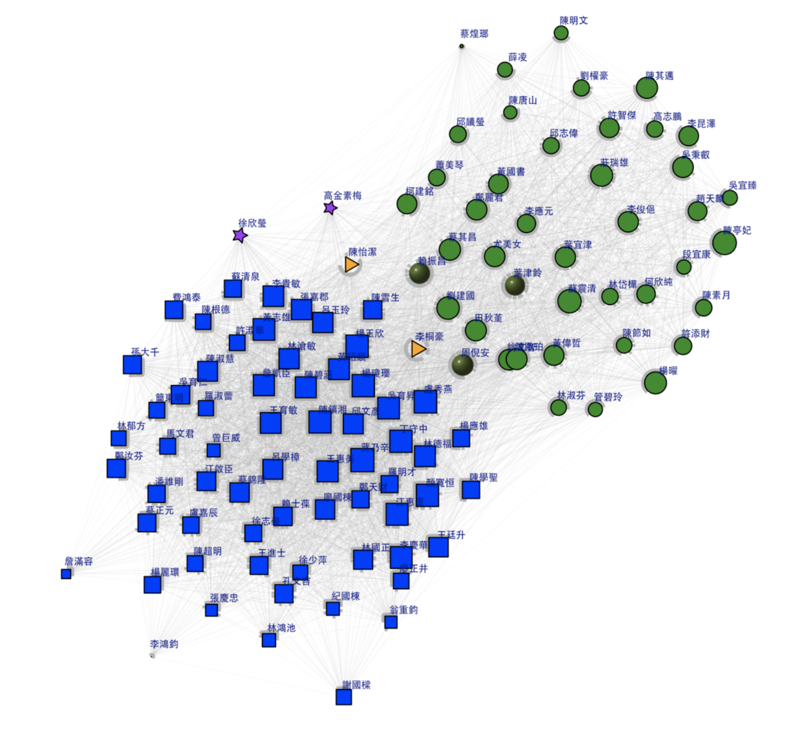
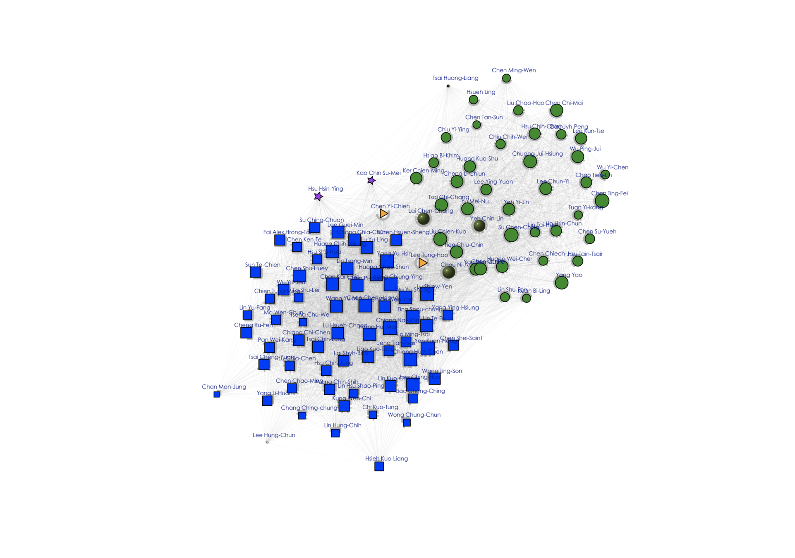
- Stanton, Introduction to Data Science 2013
- also called Market Basket Analysis
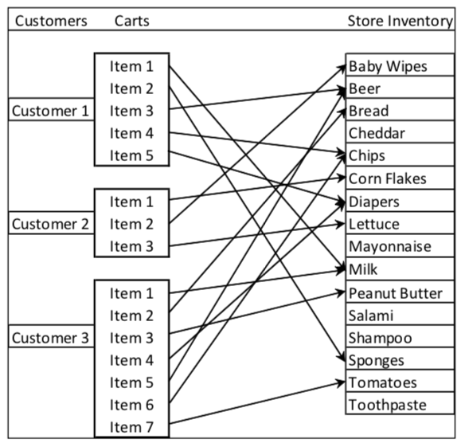
Source: Stanton, J.M. (2012). Introduction to Data Science, Third Edition. iTunes Open Source eBook.
Obermeyer, Z. and Emanuel, E.J., 2016. Predicting the future—big data, machine learning, and clinical medicine. The New England journal of medicine, 375(13), p.1216.
Weapon of Math Destruction: How big data increases inequality and threatens democracy by Cathy O'Neil
Swedish physician and statistician
Founded Gapminder Foundation
Visualize historical data on public health and poverty
Chief Economist, Google
Professor of Economics, University of California, Berkeley.
Big Data: New Tricks for Econometrics
Machine Learning and Econometrics
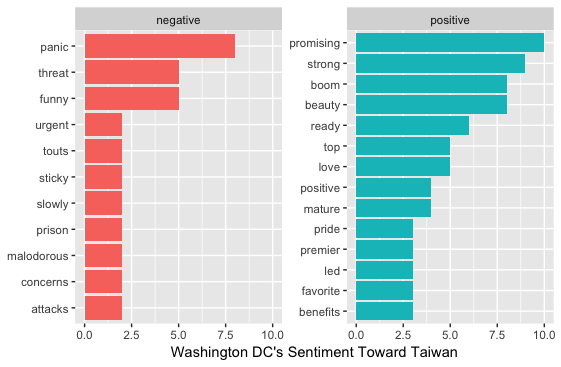
The first thing is "it will do no harm". Visualized data must not obscure the findings or confuse the readers.